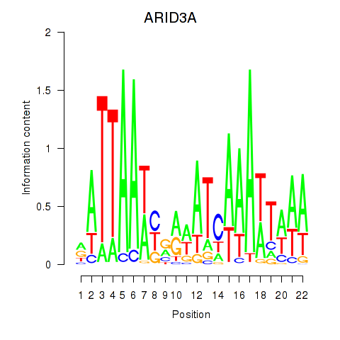

Motif ID: ARID3A
Z-value: 0.812
Transcription factors associated with ARID3A:
| Gene Symbol | Entrez ID | Gene Name |
|---|---|---|
| ARID3A | ENSG00000116017.6 | ARID3A |
![](http://string-db.org/api/image/network?network_flavor=evidence&limit=0&species=9606&caller_identity=MARA&identifiers=9606.ENSP00000341045%0D9606.ENSP00000361463%0D9606.ENSP00000359635%0D9606.ENSP00000240618%0D9606.ENSP00000366378%0D9606.ENSP00000272324%0D9606.ENSP00000382270%0D9606.ENSP00000356505%0D9606.ENSP00000340526%0D9606.ENSP00000469143%0D9606.ENSP00000225576%0D9606.ENSP00000392936%0D9606.ENSP00000361699%0D9606.ENSP00000429834%0D9606.ENSP00000353044%0D9606.ENSP00000305502%0D9606.ENSP00000305654%0D9606.ENSP00000356224%0D9606.ENSP00000360190%0D9606.ENSP00000240333%0D9606.ENSP00000312326%0D9606.ENSP00000351333%0D9606.ENSP00000434948%0D9606.ENSP00000436455%0D9606.ENSP00000452252%0D9606.ENSP00000457704%0D9606.ENSP00000268035%0D9606.ENSP00000349496%0D9606.ENSP00000319217%0D9606.ENSP00000358223%0D9606.ENSP00000332225%0D9606.ENSP00000362841%0D9606.ENSP00000349017%0D9606.ENSP00000392353%0D9606.ENSP00000263915%0D9606.ENSP00000260323%0D9606.ENSP00000333821%0D9606.ENSP00000362094%0D9606.ENSP00000304822%0D9606.ENSP00000430690%0D9606.ENSP00000303585%0D9606.ENSP00000287461%0D9606.ENSP00000309515%0D9606.ENSP00000230588%0D9606.ENSP00000298815%0D9606.ENSP00000421352%0D9606.ENSP00000414712%0D9606.ENSP00000306390%0D9606.ENSP00000310796%0D9606.ENSP00000228289%0D9606.ENSP00000362300%0D9606.ENSP00000391879%0D9606.ENSP00000419718%0D9606.ENSP00000454664%0D9606.ENSP00000377549%0D9606.ENSP00000377980%0D9606.ENSP00000454071%0D9606.ENSP00000394227%0D9606.ENSP00000396040%0D9606.ENSP00000261884%0D9606.ENSP00000324111%0D9606.ENSP00000428417%0D9606.ENSP00000268717%0D9606.ENSP00000429865%0D9606.ENSP00000363459%0D9606.ENSP00000385245%0D9606.ENSP00000317431%0D9606.ENSP00000395465%0D9606.ENSP00000272748%0D9606.ENSP00000347810%0D9606.ENSP00000357905%0D9606.ENSP00000444736%0D9606.ENSP00000320401%0D9606.ENSP00000280083%0D9606.ENSP00000455681%0D9606.ENSP00000331556%0D9606.ENSP00000334077%0D9606.ENSP00000355441%0D9606.ENSP00000266497%0D9606.ENSP00000334681%0D9606.ENSP00000345107%0D9606.ENSP00000394484%0D9606.ENSP00000369738%0D9606.ENSP00000284770%0D9606.ENSP00000225328%0D9606.ENSP00000366677%0D9606.ENSP00000356395%0D9606.ENSP00000312286%0D9606.ENSP00000350377%0D9606.ENSP00000342818%0D9606.ENSP00000352657%0D9606.ENSP00000338481%0D9606.ENSP00000382957%0D9606.ENSP00000470415%0D9606.ENSP00000249750%0D9606.ENSP00000302021%0D9606.ENSP00000381607%0D9606.ENSP00000351190%0D9606.ENSP00000445077%0D9606.ENSP00000310216%0D9606.ENSP00000375748)
{kind=link}
{kind=link}
{kind=link}
{kind=link}
{kind=link}
Top targets:
Gene overrepresentation in biological_process category:
| Log-likelihood per target | Total log-likelihood | Term | Description |
|---|---|---|---|
| 0.3 | 1.0 | GO:0051771 | negative regulation of nitric-oxide synthase biosynthetic process(GO:0051771) |
| 0.2 | 0.5 | GO:0044278 | cell wall disruption in other organism(GO:0044278) |
| 0.1 | 0.4 | GO:0051389 | inactivation of MAPKK activity(GO:0051389) |
| 0.1 | 1.1 | GO:0072592 | oxygen metabolic process(GO:0072592) |
| 0.1 | 0.2 | GO:1902283 | negative regulation of primary amine oxidase activity(GO:1902283) |
| 0.1 | 0.3 | GO:1903979 | negative regulation of microglial cell activation(GO:1903979) |
| 0.1 | 1.5 | GO:0052695 | cellular glucuronidation(GO:0052695) |
| 0.1 | 0.2 | GO:0072334 | UDP-galactose transport(GO:0015785) UDP-galactose transmembrane transport(GO:0072334) |
| 0.0 | 0.1 | GO:2000502 | negative regulation of natural killer cell chemotaxis(GO:2000502) |
| 0.0 | 0.3 | GO:0019355 | nicotinamide nucleotide biosynthetic process from aspartate(GO:0019355) 'de novo' NAD biosynthetic process from aspartate(GO:0034628) |
| 0.0 | 0.1 | GO:1900369 | negative regulation of RNA interference(GO:1900369) |
| 0.0 | 0.2 | GO:0045209 | MAPK phosphatase export from nucleus(GO:0045208) MAPK phosphatase export from nucleus, leptomycin B sensitive(GO:0045209) |
| 0.0 | 0.3 | GO:0044861 | protein transport into plasma membrane raft(GO:0044861) |
| 0.0 | 0.1 | GO:0042214 | terpene metabolic process(GO:0042214) |
| 0.0 | 0.1 | GO:2000230 | negative regulation of pancreatic stellate cell proliferation(GO:2000230) |
| 0.0 | 0.2 | GO:0044210 | 'de novo' CTP biosynthetic process(GO:0044210) |
| 0.0 | 0.4 | GO:0043152 | induction of bacterial agglutination(GO:0043152) |
| 0.0 | 0.1 | GO:0002581 | negative regulation of antigen processing and presentation of peptide or polysaccharide antigen via MHC class II(GO:0002581) |
| 0.0 | 0.2 | GO:0051725 | protein de-ADP-ribosylation(GO:0051725) |
| 0.0 | 0.1 | GO:0090526 | regulation of gluconeogenesis involved in cellular glucose homeostasis(GO:0090526) |
| 0.0 | 0.1 | GO:0044240 | multicellular organism lipid catabolic process(GO:0044240) |
| 0.0 | 0.3 | GO:0031914 | negative regulation of synaptic plasticity(GO:0031914) |
| 0.0 | 0.2 | GO:0090625 | mRNA cleavage involved in gene silencing by siRNA(GO:0090625) |
| 0.0 | 0.1 | GO:0010652 | regulation of cell communication by chemical coupling(GO:0010645) positive regulation of cell communication by chemical coupling(GO:0010652) |
| 0.0 | 0.2 | GO:1904694 | negative regulation of vascular smooth muscle contraction(GO:1904694) |
| 0.0 | 0.1 | GO:0045200 | establishment or maintenance of neuroblast polarity(GO:0045196) establishment of neuroblast polarity(GO:0045200) |
| 0.0 | 0.1 | GO:0045065 | cytotoxic T cell differentiation(GO:0045065) |
| 0.0 | 0.5 | GO:0033141 | positive regulation of peptidyl-serine phosphorylation of STAT protein(GO:0033141) |
| 0.0 | 0.2 | GO:0035799 | ureter maturation(GO:0035799) |
| 0.0 | 0.1 | GO:0035188 | blastocyst hatching(GO:0001835) hatching(GO:0035188) organism emergence from protective structure(GO:0071684) |
| 0.0 | 0.1 | GO:0002071 | glandular epithelial cell maturation(GO:0002071) type B pancreatic cell maturation(GO:0072560) |
| 0.0 | 0.3 | GO:1990440 | positive regulation of transcription from RNA polymerase II promoter in response to endoplasmic reticulum stress(GO:1990440) |
| 0.0 | 0.1 | GO:1900245 | positive regulation of MDA-5 signaling pathway(GO:1900245) |
| 0.0 | 0.1 | GO:1904139 | microglial cell migration(GO:1904124) regulation of microglial cell migration(GO:1904139) |
| 0.0 | 0.4 | GO:1904778 | regulation of protein localization to cell cortex(GO:1904776) positive regulation of protein localization to cell cortex(GO:1904778) |
| 0.0 | 0.1 | GO:0097498 | endothelial tube lumen extension(GO:0097498) |
| 0.0 | 0.1 | GO:0019805 | quinolinate biosynthetic process(GO:0019805) |
| 0.0 | 0.1 | GO:0035105 | sterol regulatory element binding protein import into nucleus(GO:0035105) |
| 0.0 | 0.6 | GO:0045730 | respiratory burst(GO:0045730) |
| 0.0 | 0.2 | GO:0070973 | protein localization to endoplasmic reticulum exit site(GO:0070973) |
| 0.0 | 0.3 | GO:0043248 | proteasome assembly(GO:0043248) |
| 0.0 | 0.1 | GO:0034343 | type III interferon production(GO:0034343) regulation of type III interferon production(GO:0034344) positive regulation of interferon-alpha biosynthetic process(GO:0045356) |
| 0.0 | 0.1 | GO:0006601 | creatine biosynthetic process(GO:0006601) |
| 0.0 | 0.1 | GO:0000727 | double-strand break repair via break-induced replication(GO:0000727) |
| 0.0 | 0.1 | GO:0038018 | Wnt receptor catabolic process(GO:0038018) |
| 0.0 | 0.1 | GO:0015783 | GDP-fucose transport(GO:0015783) purine nucleotide-sugar transport(GO:0036079) |
| 0.0 | 0.0 | GO:0006542 | glutamine biosynthetic process(GO:0006542) |
| 0.0 | 0.1 | GO:0014827 | intestine smooth muscle contraction(GO:0014827) |
| 0.0 | 0.1 | GO:0038129 | directional guidance of interneurons involved in migration from the subpallium to the cortex(GO:0021840) chemorepulsion involved in interneuron migration from the subpallium to the cortex(GO:0021842) ERBB3 signaling pathway(GO:0038129) |
| 0.0 | 0.0 | GO:0002584 | negative regulation of antigen processing and presentation of peptide antigen(GO:0002584) |
| 0.0 | 0.2 | GO:0006307 | DNA dealkylation involved in DNA repair(GO:0006307) |
Gene overrepresentation in cellular_component category:
| Log-likelihood per target | Total log-likelihood | Term | Description |
|---|---|---|---|
| 0.3 | 1.0 | GO:0097057 | TRAF2-GSTP1 complex(GO:0097057) |
| 0.1 | 0.3 | GO:1990666 | PCSK9-LDLR complex(GO:1990666) |
| 0.1 | 0.2 | GO:0043159 | cytoskeletal calyx(GO:0033150) acrosomal matrix(GO:0043159) |
| 0.1 | 0.6 | GO:0032010 | phagolysosome(GO:0032010) |
| 0.1 | 0.2 | GO:0097679 | other organism cytoplasm(GO:0097679) |
| 0.1 | 0.4 | GO:0035867 | alphav-beta3 integrin-IGF-1-IGF1R complex(GO:0035867) |
| 0.0 | 0.1 | GO:1990723 | cytoplasmic periphery of the nuclear pore complex(GO:1990723) |
| 0.0 | 0.1 | GO:0000811 | GINS complex(GO:0000811) |
| 0.0 | 0.3 | GO:0044305 | calyx of Held(GO:0044305) |
| 0.0 | 0.3 | GO:0044352 | pinosome(GO:0044352) macropinosome(GO:0044354) |
| 0.0 | 0.4 | GO:0042589 | zymogen granule membrane(GO:0042589) |
| 0.0 | 0.4 | GO:0008091 | spectrin(GO:0008091) |
| 0.0 | 0.1 | GO:0044530 | supraspliceosomal complex(GO:0044530) |
| 0.0 | 0.2 | GO:0005947 | mitochondrial alpha-ketoglutarate dehydrogenase complex(GO:0005947) |
| 0.0 | 0.1 | GO:0002079 | inner acrosomal membrane(GO:0002079) |
| 0.0 | 0.3 | GO:0044754 | autolysosome(GO:0044754) |
| 0.0 | 0.4 | GO:0031229 | integral component of nuclear inner membrane(GO:0005639) intrinsic component of nuclear inner membrane(GO:0031229) |
| 0.0 | 0.2 | GO:0035068 | micro-ribonucleoprotein complex(GO:0035068) |
| 0.0 | 0.7 | GO:0046658 | anchored component of plasma membrane(GO:0046658) |
| 0.0 | 1.0 | GO:0030173 | integral component of Golgi membrane(GO:0030173) |
Gene overrepresentation in molecular_function category:
| Log-likelihood per target | Total log-likelihood | Term | Description |
|---|---|---|---|
| 0.2 | 1.0 | GO:0070026 | nitric oxide binding(GO:0070026) |
| 0.2 | 1.1 | GO:0004473 | malate dehydrogenase (decarboxylating) (NAD+) activity(GO:0004471) malate dehydrogenase (decarboxylating) (NADP+) activity(GO:0004473) |
| 0.1 | 0.4 | GO:0005010 | insulin-like growth factor-activated receptor activity(GO:0005010) |
| 0.1 | 0.2 | GO:0005459 | UDP-galactose transmembrane transporter activity(GO:0005459) |
| 0.1 | 0.2 | GO:0052593 | tryptamine:oxygen oxidoreductase (deaminating) activity(GO:0052593) aminoacetone:oxygen oxidoreductase(deaminating) activity(GO:0052594) aliphatic-amine oxidase activity(GO:0052595) phenethylamine:oxygen oxidoreductase (deaminating) activity(GO:0052596) |
| 0.0 | 0.3 | GO:0000309 | nicotinamide-nucleotide adenylyltransferase activity(GO:0000309) |
| 0.0 | 0.2 | GO:0003875 | ADP-ribosylarginine hydrolase activity(GO:0003875) |
| 0.0 | 0.7 | GO:0032052 | bile acid binding(GO:0032052) |
| 0.0 | 0.4 | GO:0035381 | extracellular ATP-gated cation channel activity(GO:0004931) ATP-gated ion channel activity(GO:0035381) |
| 0.0 | 0.3 | GO:0030229 | very-low-density lipoprotein particle receptor activity(GO:0030229) |
| 0.0 | 0.6 | GO:0016176 | superoxide-generating NADPH oxidase activator activity(GO:0016176) |
| 0.0 | 0.4 | GO:0042731 | PH domain binding(GO:0042731) |
| 0.0 | 0.5 | GO:0005132 | type I interferon receptor binding(GO:0005132) |
| 0.0 | 0.2 | GO:0003883 | CTP synthase activity(GO:0003883) |
| 0.0 | 0.2 | GO:0023024 | MHC class I protein complex binding(GO:0023024) |
| 0.0 | 1.5 | GO:0001972 | retinoic acid binding(GO:0001972) |
| 0.0 | 0.5 | GO:0042834 | peptidoglycan binding(GO:0042834) |
| 0.0 | 0.1 | GO:0015173 | aromatic amino acid transmembrane transporter activity(GO:0015173) |
| 0.0 | 0.1 | GO:0003726 | double-stranded RNA adenosine deaminase activity(GO:0003726) |
| 0.0 | 0.1 | GO:0050692 | DBD domain binding(GO:0050692) |
| 0.0 | 0.1 | GO:0015067 | amidinotransferase activity(GO:0015067) glycine amidinotransferase activity(GO:0015068) |
| 0.0 | 0.2 | GO:0035005 | 1-phosphatidylinositol-4-phosphate 3-kinase activity(GO:0035005) |
| 0.0 | 0.2 | GO:0004977 | melanocortin receptor activity(GO:0004977) |
| 0.0 | 0.1 | GO:0005457 | GDP-fucose transmembrane transporter activity(GO:0005457) purine nucleotide-sugar transmembrane transporter activity(GO:0036080) |
| 0.0 | 0.0 | GO:0016211 | glutamate-ammonia ligase activity(GO:0004356) ammonia ligase activity(GO:0016211) acid-ammonia (or amide) ligase activity(GO:0016880) |
| 0.0 | 0.4 | GO:0016922 | ligand-dependent nuclear receptor binding(GO:0016922) |
| 0.0 | 0.0 | GO:0031493 | nucleosomal histone binding(GO:0031493) |
| 0.0 | 0.1 | GO:0086075 | gap junction channel activity involved in cardiac conduction electrical coupling(GO:0086075) |
| 0.0 | 0.3 | GO:0033038 | bitter taste receptor activity(GO:0033038) |
Gene overrepresentation in C2:CP:REACTOME category:
| Log-likelihood per target | Total log-likelihood | Term | Description |
|---|---|---|---|
| 0.0 | 0.5 | REACTOME_RECYCLING_OF_BILE_ACIDS_AND_SALTS | Genes involved in Recycling of bile acids and salts |
| 0.0 | 1.1 | REACTOME_GLUTATHIONE_CONJUGATION | Genes involved in Glutathione conjugation |
| 0.0 | 0.7 | REACTOME_GLUCURONIDATION | Genes involved in Glucuronidation |
| 0.0 | 0.4 | REACTOME_REGULATION_OF_COMPLEMENT_CASCADE | Genes involved in Regulation of Complement cascade |
| 0.0 | 0.2 | REACTOME_TIE2_SIGNALING | Genes involved in Tie2 Signaling |
| 0.0 | 0.6 | REACTOME_LATENT_INFECTION_OF_HOMO_SAPIENS_WITH_MYCOBACTERIUM_TUBERCULOSIS | Genes involved in Latent infection of Homo sapiens with Mycobacterium tuberculosis |
| 0.0 | 0.4 | REACTOME_REGULATION_OF_IFNA_SIGNALING | Genes involved in Regulation of IFNA signaling |